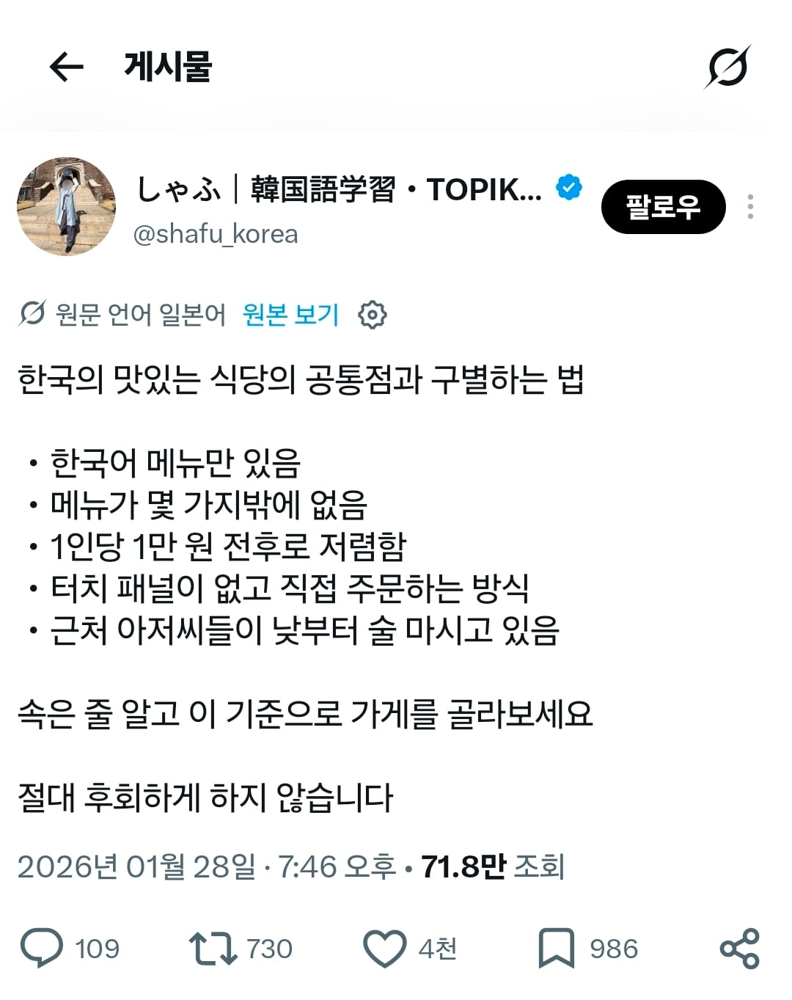
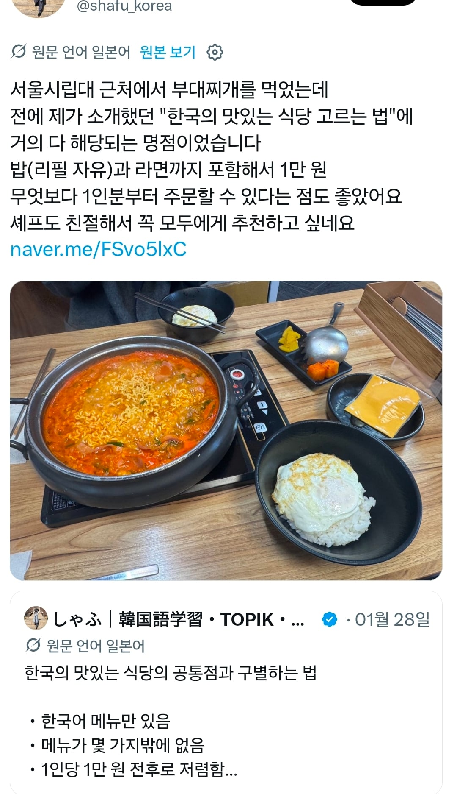
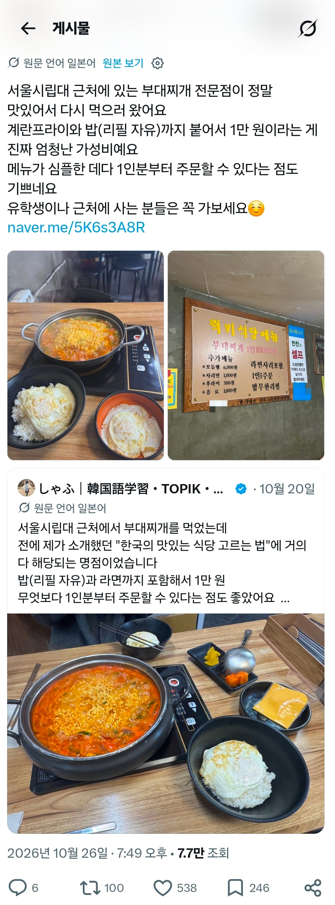
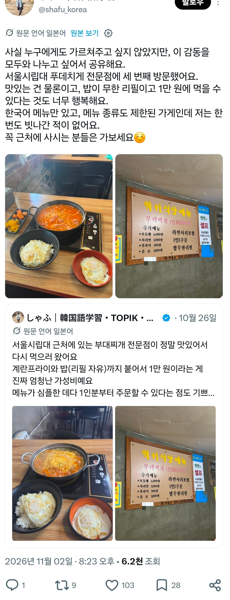

그래서 세번이나 온 부대찌개 집
공략법을 너무 잘안다




그래서 세번이나 온 부대찌개 집
공략법을 너무 잘안다
뭐 볼거 있다고 시립대 까지ㅋㅋㅋ
회기에서 놀았겠지 뭐ㅋㅋ
이제 조금만 있으면 겨울이니까
손이 시립대
와 정말 경희스러운 일이야! 고려 안 할 수가 없겠는걸?
이런건 국정원에 신고 해야 하는거 아니냐
부대찌게에 밥에 계란후라이까지 올리다니
간첩문제 심각하네 국가 기밀이 샌다는 ㅜㅜ
대외비인데 털렸네
인덕션 있는 가게는 신박하네
저번에 우리회사 근처에서 일본인이 헤메고 있길래 백퍼 성수갈꺼 잘못왔다싶었는데(회사가 성수에서 멀지 않음) 놀랍게도 나도 모르는 동네 식당을 찾아온거였음 ㅋㅋㅋㅋ
요새 외국인 관광객들이 우리보다 더 잘아는거 같아
원래 관광객이 현지인보다 더 잘아눈경우가 많지 ㅋㅋ 해외도 ㅋㅋ
현지인은 그냥 거기살기만하는데 관광객은 찾아보고 공부하고 가니깐.
울동내도 관광이랑 전혀 관계 없는동내인데
일본여성분들 와서 사진찍고 가시더라 ㅋㅋㅋㅋ
대한민국 기밀 유출... 이대로 괜찮은가...
사실 일본에 가도 그대로 적용 되잖아 ㅋㅋㅋㅋ
얼마나 맛있으면 3번을 가냐
근처 아저씨들이 낮부터 술마시는데가 진짜긴 하지 ㅋㅋ
부찌 맛집 찾으면 기가 막히긴해
럭키식당 몇 번 가봤는데, 그냥 평범함. 우연히 저 일본인 입맛에 유독 잘 맞았나 봄
근처아저씨가 대낮부터 술까는거
이거는 1급 기밀 유출인데 현지인도 모르는거라
낮부터 술까면 뭐 말다햇지
시립대쪽은 대체 왜간거야ㅋㅋ
근데 메뉴가 1개 뿐인 오래된 집은 진짜 맛집이긴함
동네 설농탕 집 대낮부터 수육 전골에다 소주 마시는 아재들이 깔려 있길래
궁금해서 먹어봤는데 개존맛이었음ㅋㅋ
외국인들 등쳐먹는 느낌의 식당 있음 그래서 외국가면 그런대 피함
내가 일본 가서 쓰는 방법인데ㅋㅋㅋ
찾아보니 네이버 리뷰도 2개뿐이던데 우째알았누? ㄷㄷ
어느나라나 똑같은거 아닌가 ㅋㅋㅋㅋ
사실 내가 국내여행할 때, 특히 제주같은데서 써먹는 방법임.
동네 할배할매들 모여있고 아재들 소주빨고 정치얘기하는 곳은 무조건 돈값함
저건 일본에서도 통하는 공략이잔아.....
우리도 마찬가지에 일본이나 중국갔는데 한글 간판에 한글 메뉴판에 손님도 다 한국인이다? 맛을 떠나서 왜 해외여행 왔나 좀 현타옴 ㅋㅋㅋㅋ
근데 와이프가 인스타 유명집 위주로 찾아서 그런데 먾이감. 내스타일은 대충 걷다가 현지인들 많이 앉아있는 곳 슥 들어가기.
근데 단점으로는 인종차별? 사실 같은 아시안이니까 다른 표현 써야 할것 같은데 암튼 외국인 안받아도 장사 잘 되니까 꼬운티 내는 경우가 있음.
그냥 부대찌개 좋아 청년이잖아...
회기파전 먹고싶다..
진짜 맛집 찾는법 : 일단 코로나 이후에 지어진 서울 번화가 식당은 아님
그냥 사람이 많아서 존나 맛이 어중간해도 웨이팅이 있는거야
기사식당, 오피스 건물 지하나 어중간한 층에 있는 식당가
터치 패드 있는 집은 존나 편하긴 한데 뭔가 맛이 다 양산형 느낌이 나긴 하더라.
이건 인정이지. 핵심은 낮술 까는 아저씨들임 ㅋㅋㅋㅋㅋㅋㅋㅋㅋㅋ
관광지는 대부분 창렬되잖아
그런거지 뭐
기밀이 줄줄 세고 있다